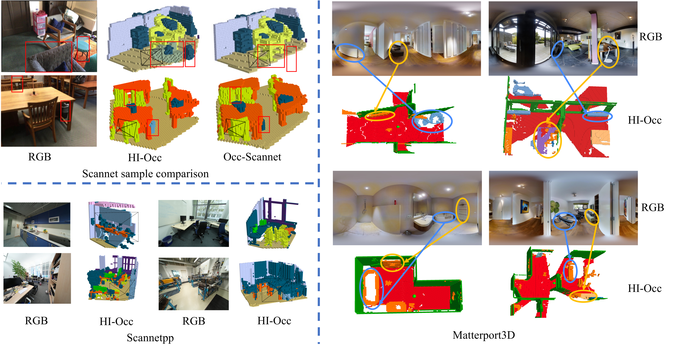
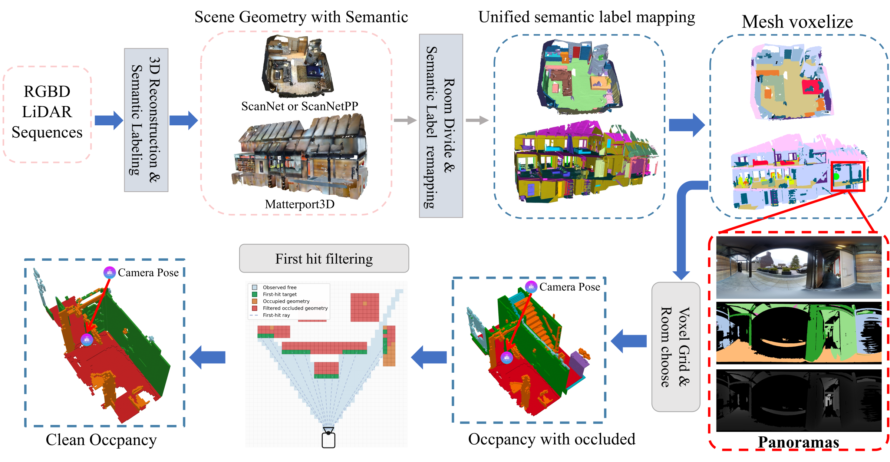
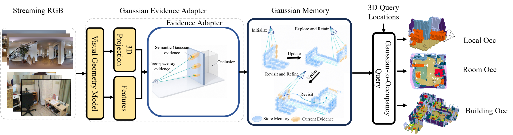
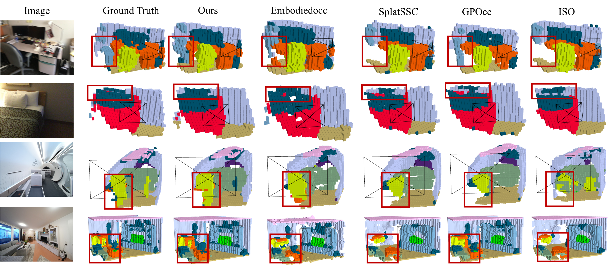
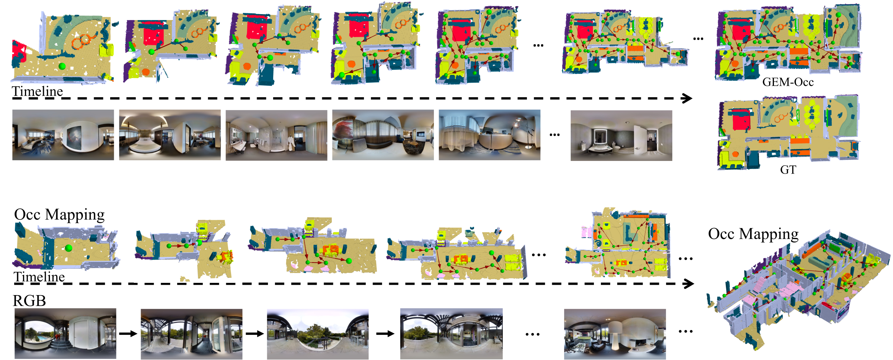

Embodied agents exploring indoor environments require reliable semantic occupancy memory that persists across observations and revisits. Building such memory is challenging because each observation provides incomplete and uncertain geometric and semantic evidence.
We introduce GEM-Occ, a Gaussian Evidence Memory framework that consolidates evidence accumulated over time into persistent semantic occupancy memory. Local predictions are converted into occupied semantic Gaussians and free-space ray evidence. Confidence- and visibility-aware causal updates integrate supporting observations, suppress occupancy contradicted by observed free space, and preserve previously observed structures through occlusion. A hierarchical memory organization supports continued mapping and efficient queries across connected indoor spaces.
To evaluate this capability, we introduce HIOcc, a unified benchmark for embodied semantic occupancy memory. HIOcc establishes a shared semantic label space and evaluation framework spanning local prediction, room-level online mapping, and building-level mapping, while accommodating perspective and panoramic observations.
Experiments on HIOcc demonstrate that GEM-Occ outperforms existing methods, enabling accurate semantic occupancy prediction and consistent online mapping across spatial scales with efficient memory usage and fast occupancy queries.



GEM-Occ converts streaming perspective and panoramic observations into semantic Gaussian evidence and free-space rays. Confidence-weighted fusion reinforces supported structures, free-space evidence revises contradicted occupancy, and visibility-aware updates retain occluded memory. Occupancy queries read out local, room-level, and building-level predictions.


@misc{zhu2026gemoccvisualgeometryevidence,
title = {From Visual Geometry Evidence to Embodied Semantic Occupancy Memory},
author = {Hu Zhu and Bohan Li and Xianda Guo and Yanlun Peng and Hongsi Liu and Baorui Peng and Xiaofeng Wang and Mingqi Yuan and Xin Jin and Wenjun Zeng and Chang Wen Chen},
year = {2026},
eprint = {2607.05543},
archivePrefix = {arXiv},
primaryClass = {cs.RO},
url = {https://arxiv.org/abs/2607.05543}
}